小组赛，Day1
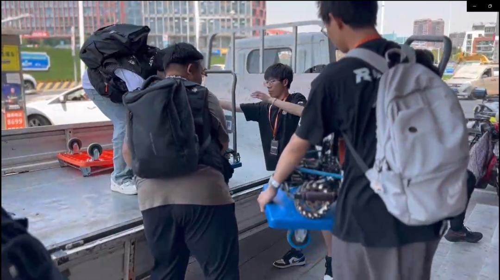
经过了长达一年的备赛准备，完成了一项项挑战，战胜了一个个困难，我们终于来到了这里。从机甲设计到制作的每一个细节，我们都花费了大量的时间和精力。每个人都在这些细节当中找到了自己的价值和拓展的空间。现在，经历了18个小时的长途旅程，怀着既兴奋又忐忑的心情，我们终于来到了青岛，机甲大师北部分区赛，我们来了！
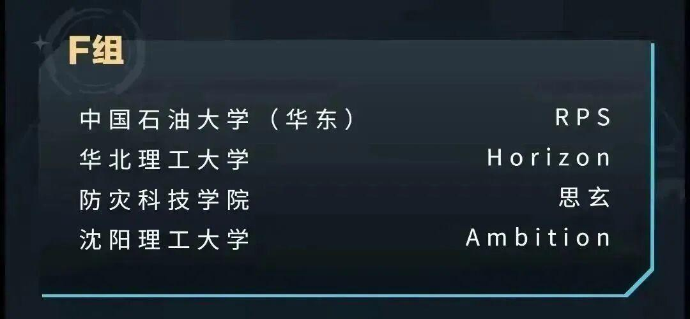
分入F组的队伍有东道主中国石油大学（华东）RPS战队，华北理工大学Horizon战队，防灾科技学院思玄战队。大家的实力都非常强劲，中石大（华东）更是去年中部赛区冠军，实力非凡。相信大家一定可以赛出水平，赛出风格。其中第一日赛程如下：
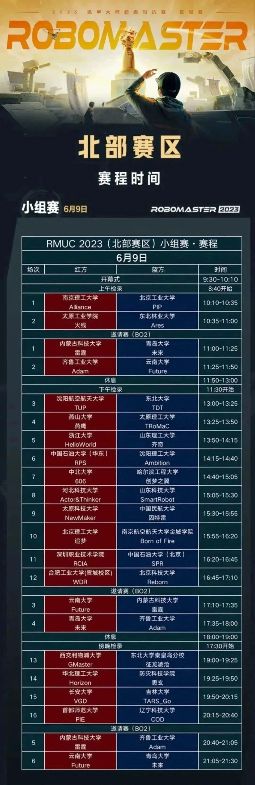
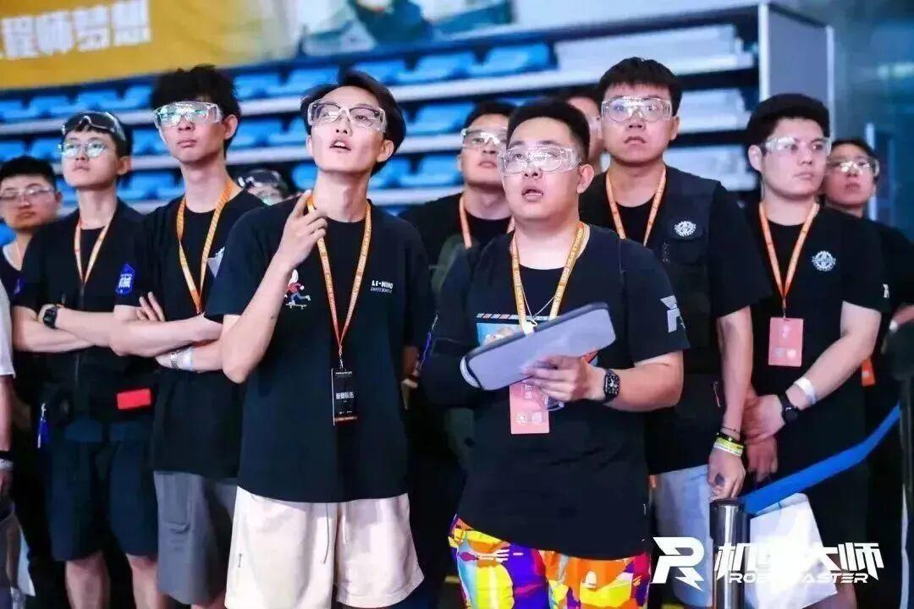
6月9日14：15开始了我们此次比赛的第一场，我方蓝方对战红方中国石油大学（华东）。
第一场比赛，开始双方进攻性都比较强，在红方英雄率先两发大弹丸命中我方前哨站的不利情况下。我方稳扎稳打，抓住红方平衡步兵因姿态问题阵亡的机会，4号步兵在红方2号工程和3号步兵的堵截下，反杀红方3号步兵，取得一血。
此后我方4号步兵抓住机会，进攻红方前哨站，打掉其155点血量，并在之后红方的包围圈中击杀红方3号步兵，随后利用工程和3号步兵防守住了红方进攻，并组织步兵，英雄进行了一波反攻，虽然最后以前哨站血量之差败给红方，但我们已经付出了我们的全部努力，尽吾志而无悔。
第2场比赛，在我方前哨站血量劣势的前提下，我方工程积极防守，在前哨站挡住了红方哨兵和工程的进攻，有力地阻挡了红方的进攻，实现了较好的防守。
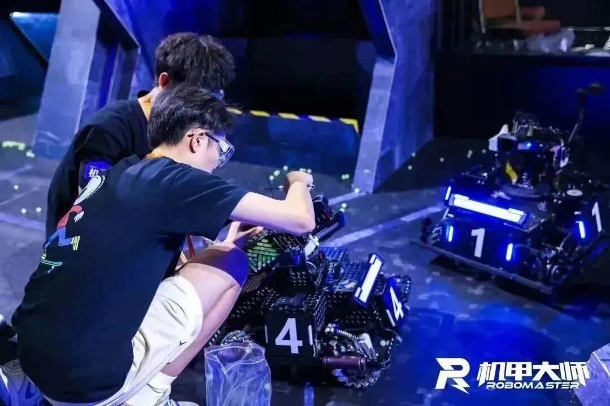
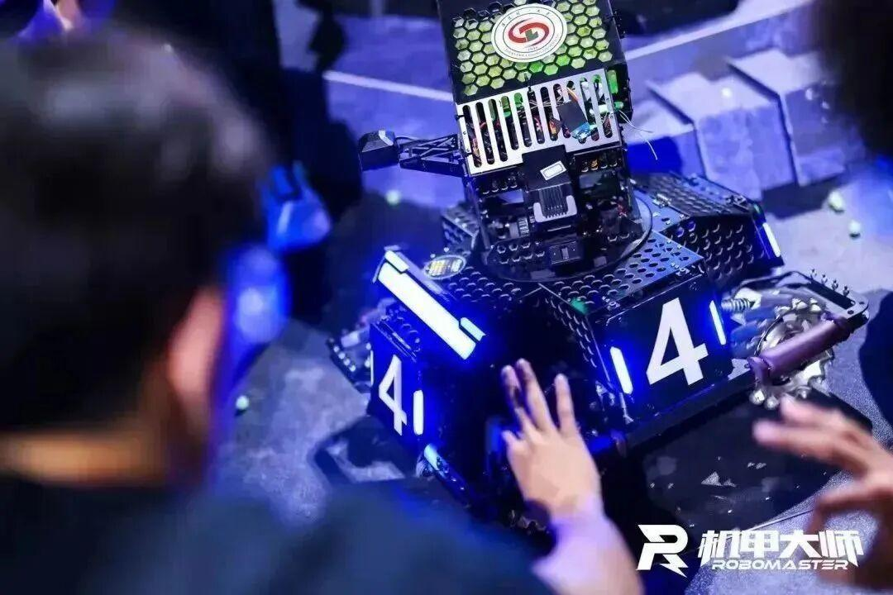
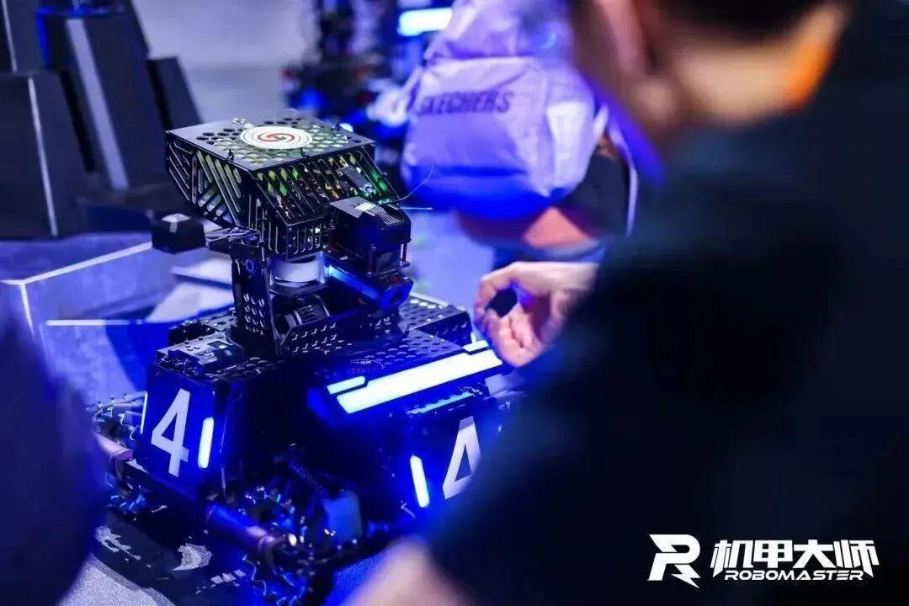
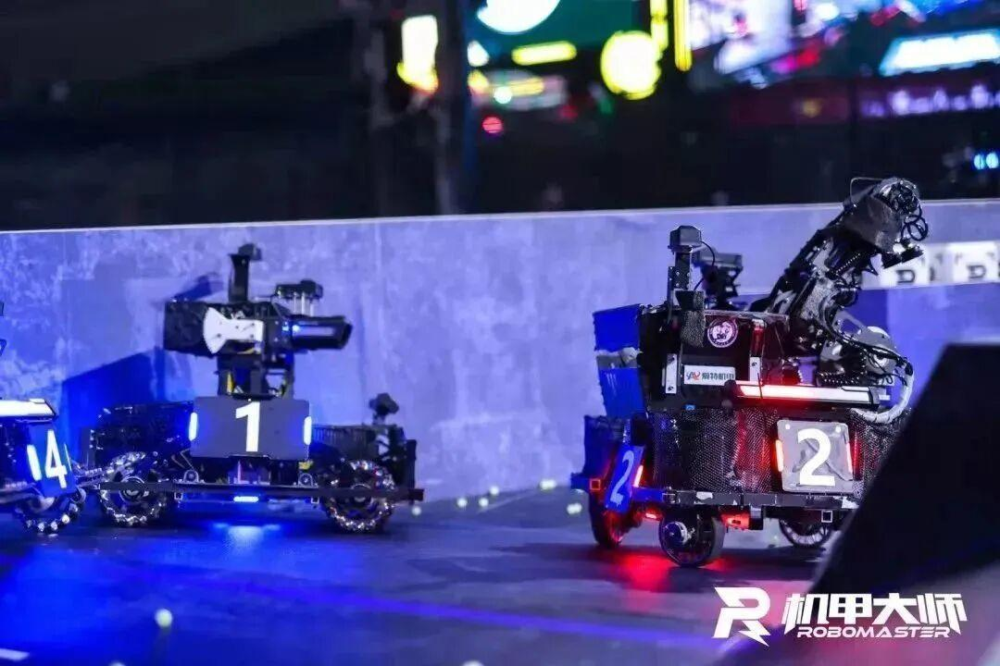
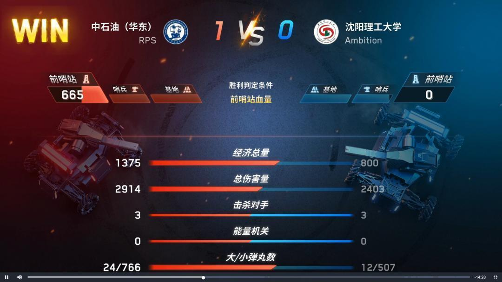

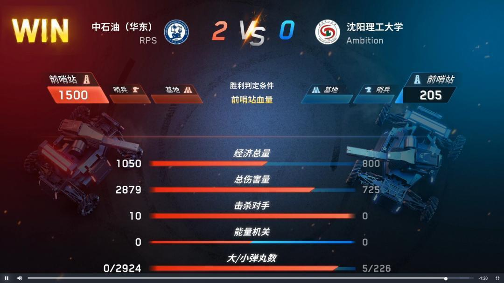

首战败给老牌强队中石油（华东），我们认识到了自己的不足，也看到了改进空间。不屈不挠，尽力而为，尽管在比赛中输给了强大的对手，我们并没有气馁，因为我们知道自己已经付出了全部的努力。在失败中，我们找到了自己不足之处，并让它们成为我们未来奋斗的动力。也祝愿中石油(华东)在赛场上实现自己的目标，在接下来的比赛中取得更好的成绩。
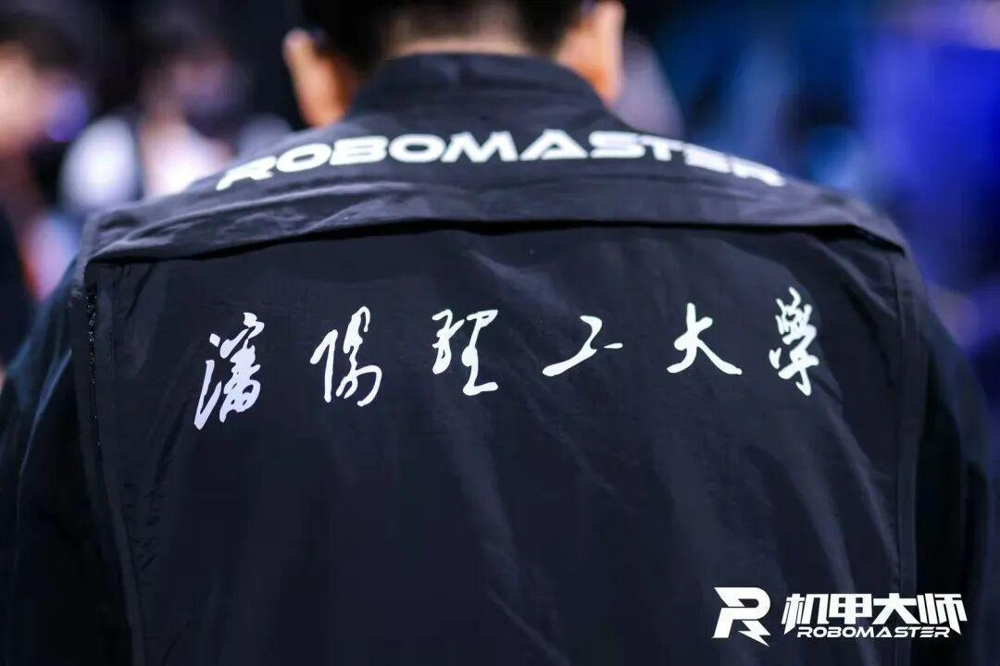
比赛前我们进行了近一年紧锣密鼓的的准备，由于赛制的改变，这次大赛规则变动较大，在哨兵和工程方面提出了新要求，再加上因疫情原因导致的人员变化，我们不止一次遭遇挫折。不过我们的底气在于奋斗了近一年的日日夜夜，那些昼夜颠倒，夜以继日的奋斗，终将成为我们生活中不灭的底色，那些与机械作伴，与零件共眠的日子，终将成为我们一生中的高光时刻，接下来的比赛，Ambition加油，我们在路上！
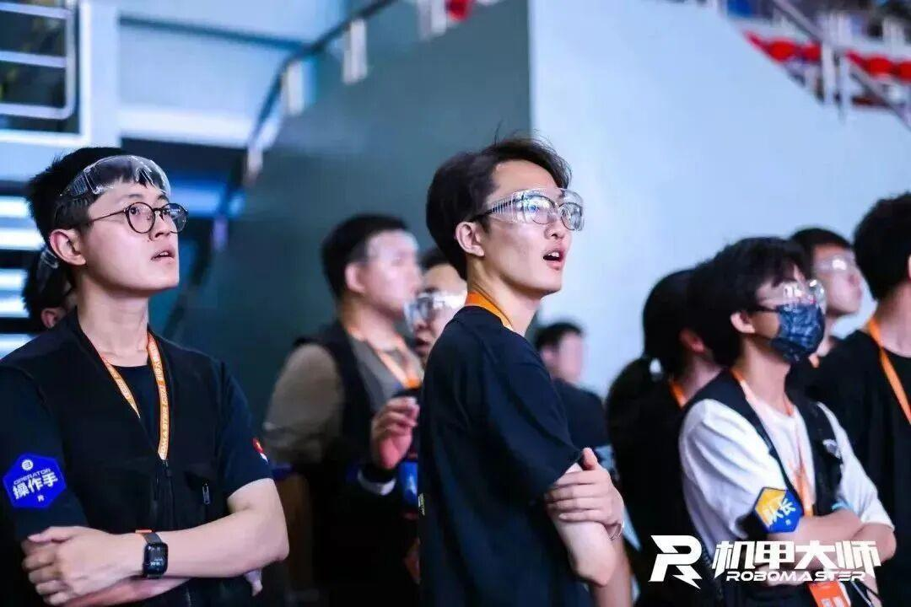
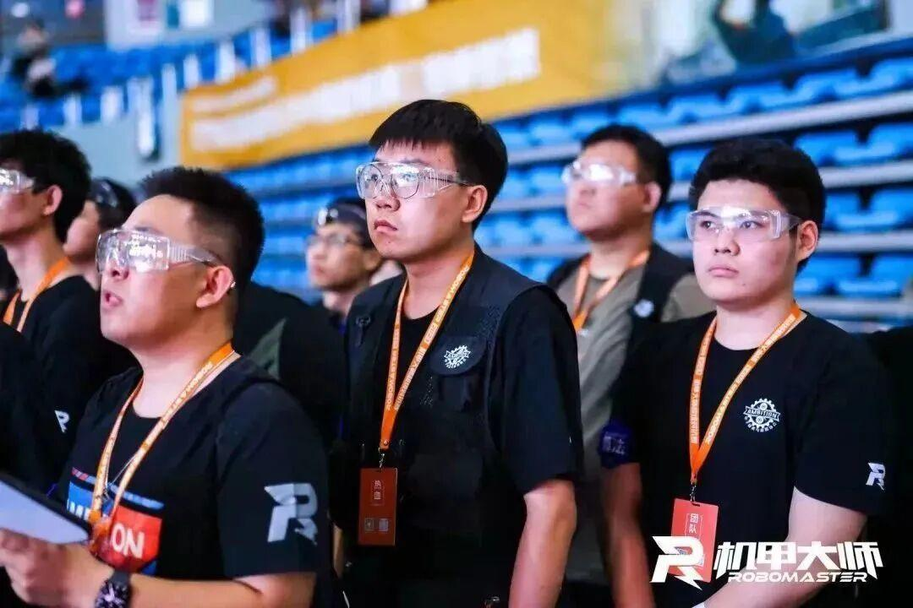
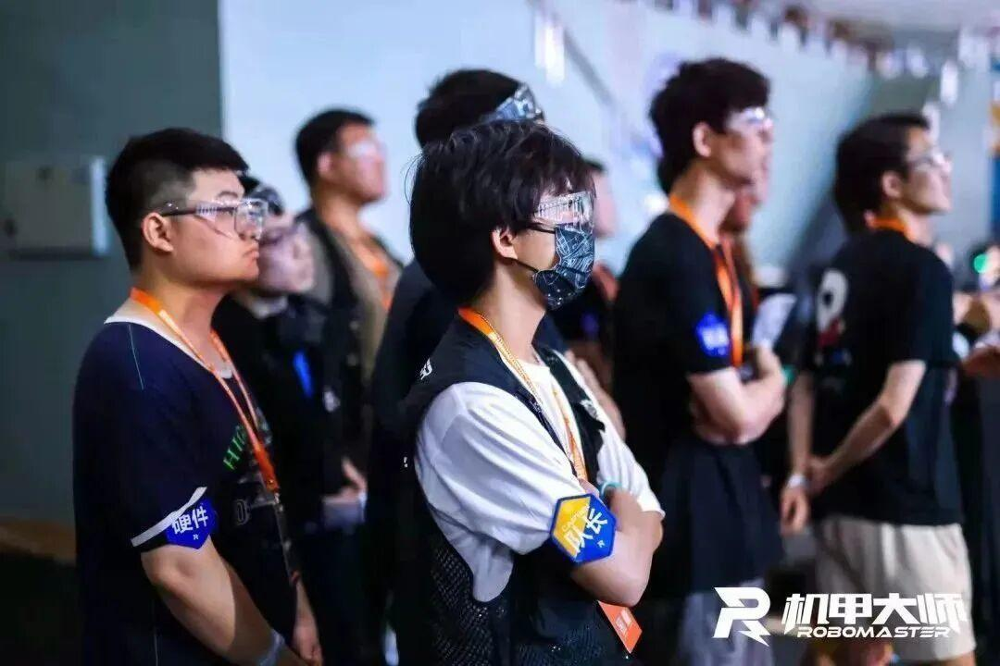
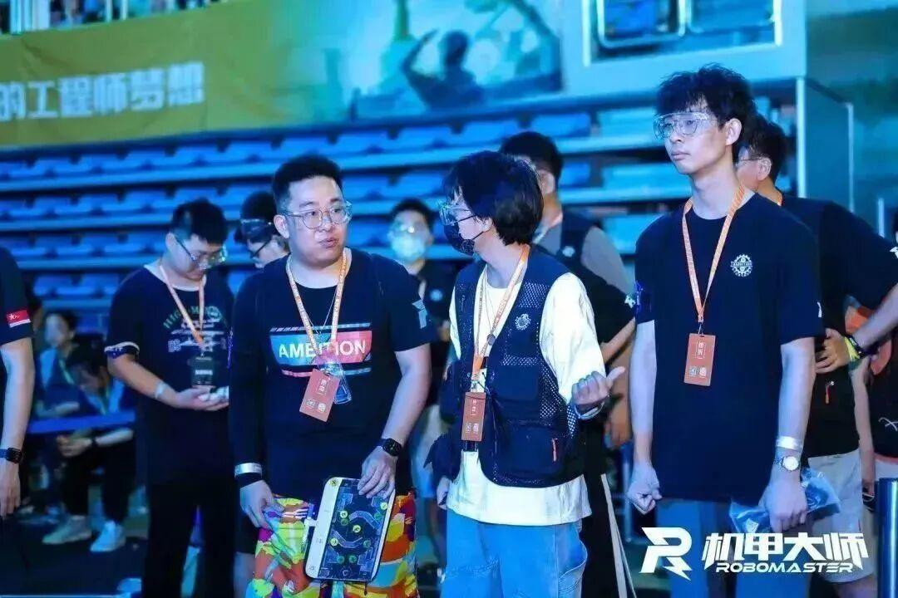
排版|李现亮
图片|大疆官方
文字|李现亮